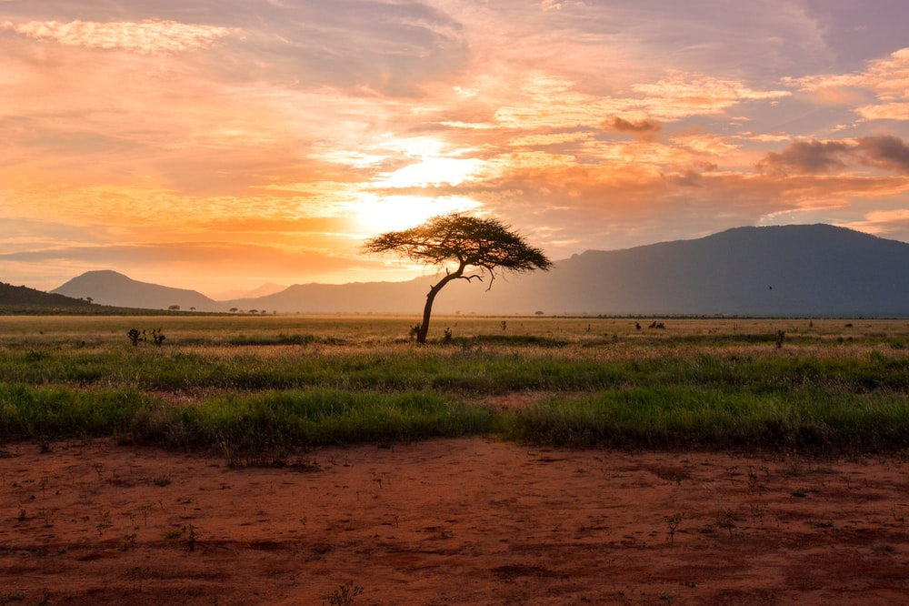
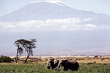

Africa este al doilea continent ca mărime de pe Terra și cel mai populat după Asia. În Africa se găsește Nilul, cel mai lung fluviu din lume și Sahara, cel mai mare deșert din lume. Cel mai înalt punct al continentului este Muntele Kilimanjaro din Tanzania (5.895 m), iar cel mai jos punct este lacul Assal situat în micuța țară Djibouti (156 m sub nivelul mării). Africa are o suprafață de 30.244.050 km² incluzând și insulele adiacente, ocupă 20,3% din suprafața terestră a planetei. Cu peste 1,34 miliarde de locuitori [2] în 54 de țări, Africa este gazdă a unei șeptimi din populația totală de pe glob. În Africa își are originea rasa umană, de-a lungul văii Marelui Rift African ce traversează Etiopia și Kenya fiind descoperite cele mai vechi schelete ale înaintașilor oamenilor de azi. Numele Africa a fost introdus în vocabularul vestic de către romani, care foloseau denumirea Africa terra - "pământul Afri-lor" (plural, sau "Afer" singular) - pentru partea nordică a continentului, provincia Africa, cu capitala la Cartagina, localizată în Tunisia contemporană în nordul Saharei.
Climă
Africa este continentul cu clima cea mai caldă de pe glob, cu o zonă de climă ecuatorială (cu temperaturi medii anuale având variații sezoniere reduse și cantități mari de precipitații), două zone de climă subecuatorială, două zone tropicale cu precipitații extrem de reduse (între 50 și 150 mm anual) și două zone subtropicale (cu două sezoane opuse, ploios și secetos). Temperatura cea mai ridicată (58°C) s-a înregistrat la Aztztyah (Libia) la 13 septembrie 1922. Valorile termice de peste 40°C sunt frecvente în întreaga Sahară.
Contraste
Africa este un continent al contrastelor: - al pădurii ecuatoriale, luxuriante și de nepătruns, dar și al întinselor pustiuri, în care nu întâlnești, pe zeci și sute de km pătrați, niciun arbore și în care nu cade, ani în șir, nici o picătura de ploaie; - al unora dintre cele mai mari bogății de pe glob, dar și a celor mai multe țări sărace, cu un nivel de trai al populației necorespunzător; - continent care se înscrie în aria antropogenezei (cu cele mai vechi fosile cunoscute ale strămoșilor omului) și unde au apărut câteva dintre cele mai vechi și strălucite civilizații ale antichității (egipteană, nubiană, axumită, feniciană, ș.a.), dar și ultimul care a devenit liber, cele mai multe țări africane dobândindu-și independența abia în ultimele decenii ale secolului al-XX-lea. - continentul care a plătit cel mai scump tribut sclaviei, dar care în prezent are cea mai puternică forță de regenerare, înregistrând cea mai ridicată pondere a tinerilor în totalul populației. Africa este singurul continent situat simetric față de Ecuator. După realizarea Canalului Suez, continentul african este înconjurat numai de ape. Țărmurile continentului sunt puțin crestate măsurând circa 28.000 km.
Caracteristici fizico-geografice
Deșertul Sahara Întinzându-se pe mai mult de o treime din continent, Sahara este cel mai mare deșert din lume, cu aproximativ 9.065.000 km² suprafață totală. Topografia sa include zone pietroase, zone cu dune de nisip și numeroase oceane de nisip. Are înălțimi de la sub 80 de metri sub nivelul mării până la peste 3.350 m în munții Ahaggar și Tibesti. Sahara este împărțit în următoarele regiuni: deșertul libanez, deșertul nubian și deșertul vestic din Egipt, chiar la vest de Nil. Deșertul este lipsit de aproape orice fel de precipitații, singurele zone izolate irigate de râurile subterane ce izvorăsc din Munții Atlas fiind oazele. În est, apa Nilului face pământul fertil pe porțiuni restrânse. Denumirea Sahara provine din limba arabă - „Sahara” în dialectul Tuareg înseamnă „deșertul de nisip”. O altă ipoteză este aceea că provenința expresiei ar fi „sahraa” sau „es-sah-ra” ce înseamnă sterp, steril. Romanii au numit ținutul din sudul provinciei Cartagina „Deserta” ca ținut nelocuit, părăsit. În Evul Mediu era numit pur și simplu „Marele Deșert”, iar în secolul al XIX-lea a primit denumirea de azi - „Sahara”. Arabii denumesc Sahara „Bahr bela ma” ce ar însemna „Mare fără apă”. Nordul Saharei dispune de numeroase bogății naturale. Petrolul și gazele naturale sunt extrase din Algeria, Libia și Tunisia, iar fierul și fosforitele, din Mauritania și Sahara Occidentală. Alte zăcăminte existente: sare, cărbuni, cupru, mangan, uraniu, plumb, wolfram, titan și zinc. Deșertul Kalahari Are o suprafață de circa 259.000 km² acoperind mare parte din Botswana, regiunea de S-V a Africii de Sud și vestul Namibiei. Pe platoul deșertului se încrucișează șanțuri formate de râurile acum secate și arbori piperniciți. Aici se ridică și câțiva munți cu înălțimi reduse (Karas, Huns). În Africa de Sud, lângă granița cu Namibia se află Parcul Național Kalahari Gemsbok, unde trăiesc grupuri mari de animale sălbatice.